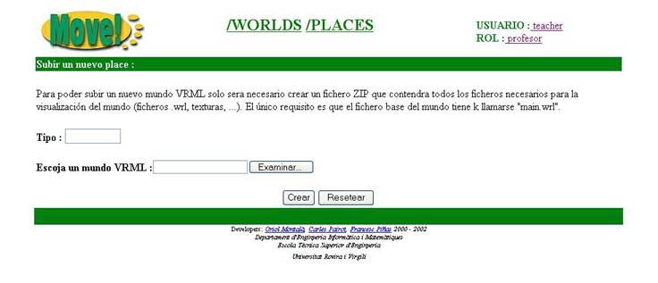

2.3.2 Subir un nuevo tipo de Place

Para subir un nuevo tipo de Place solo tendremos que rellenar los siguientes campos:
- Tipo: tipo de Place (ira relacionado con el aspecto que tenga el mundo VRML)
- Escoja un mundo VRML: fichero ZIP que contendr� el mundo VRML que definir� el aspecto 3D del Place
Una vez introducidos todos los datos deberemos pulsar el bot�n . Automaticamente volveremos a la pantalla anterior y veremos como nuestro nuevo tipo de Place ya aparece en el campo tipo.